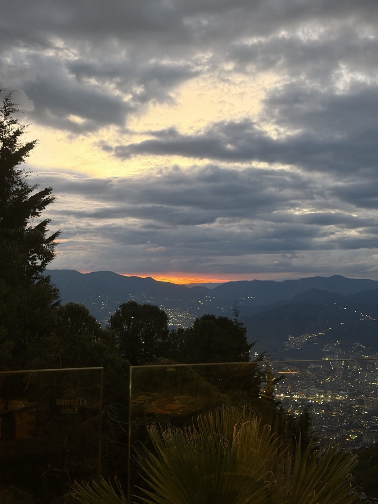
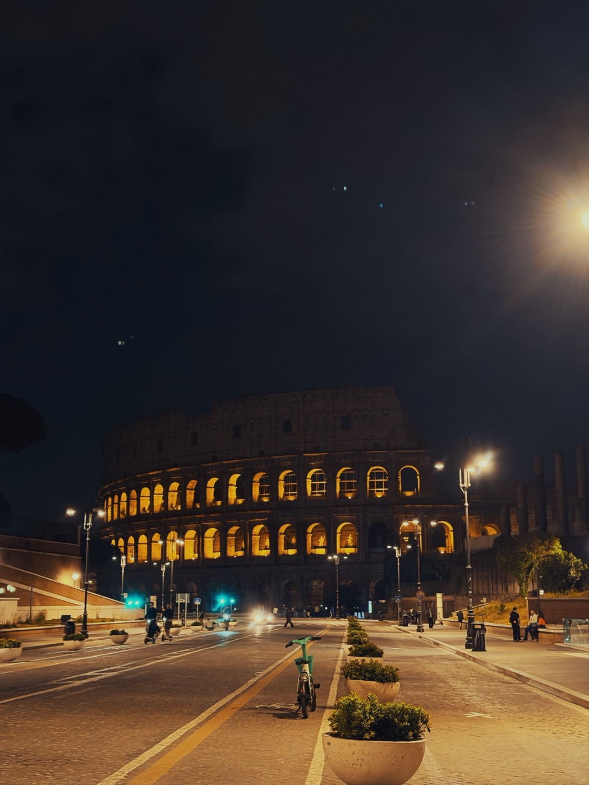
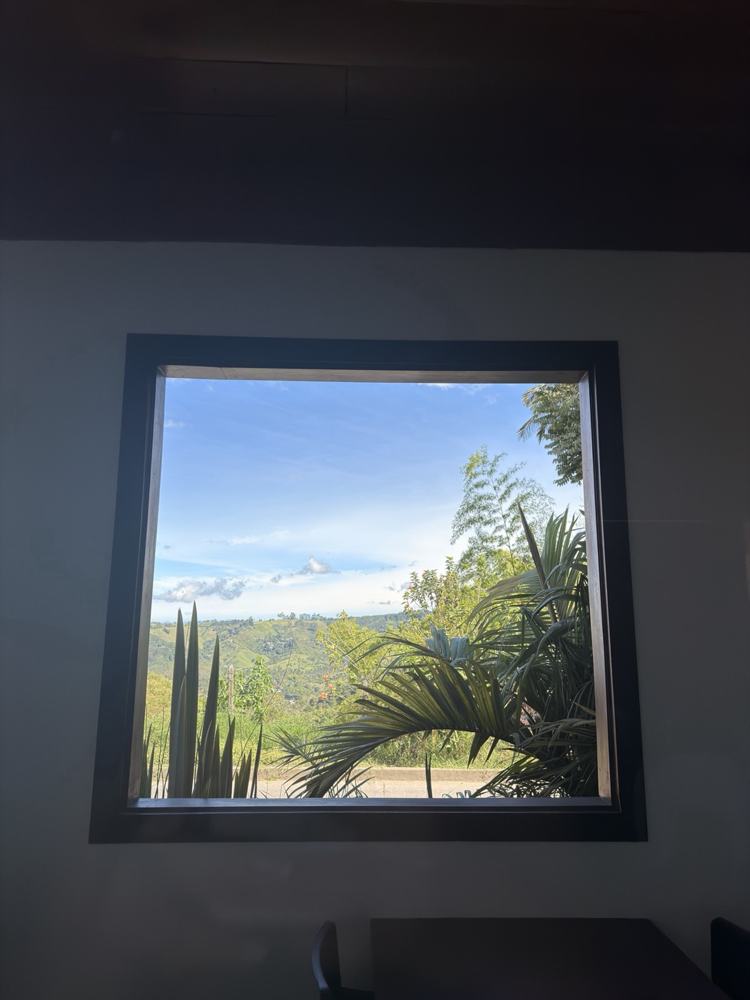
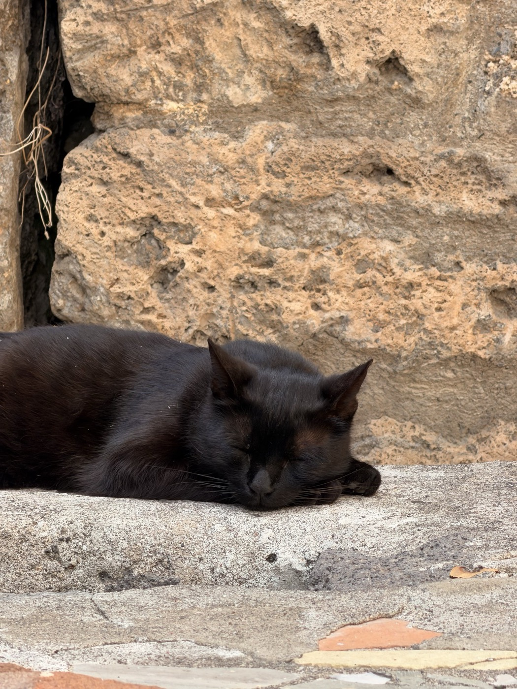
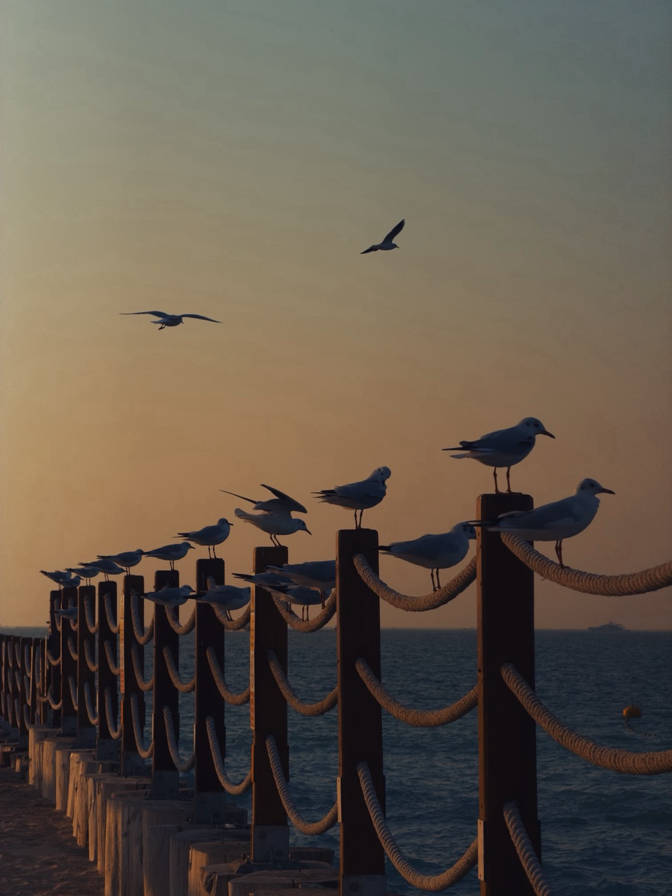
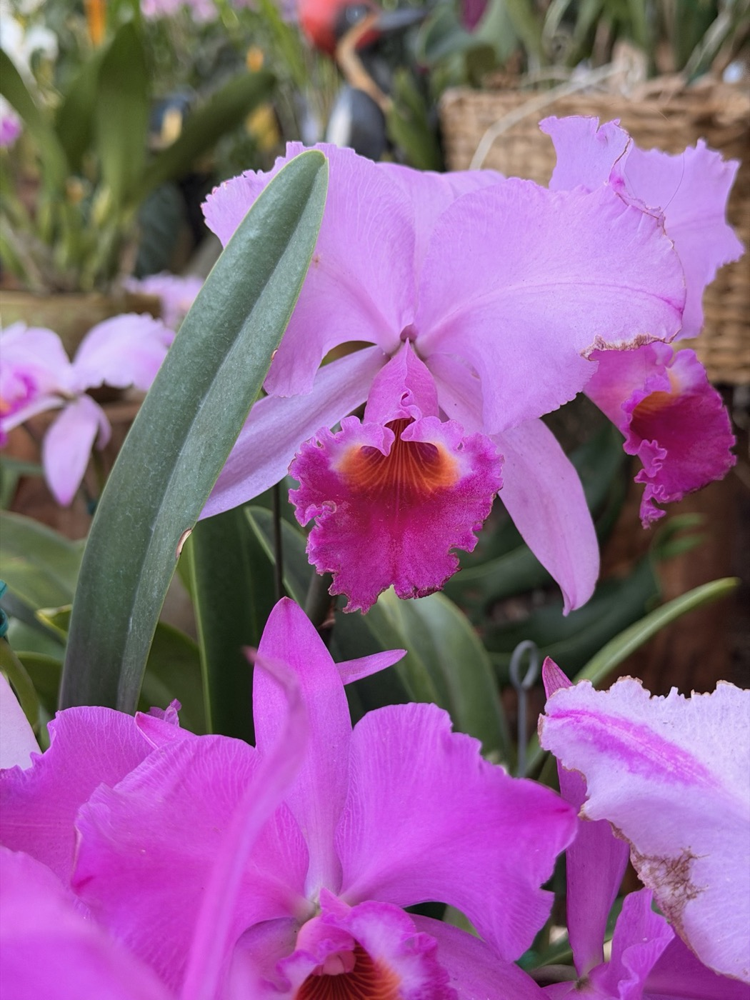
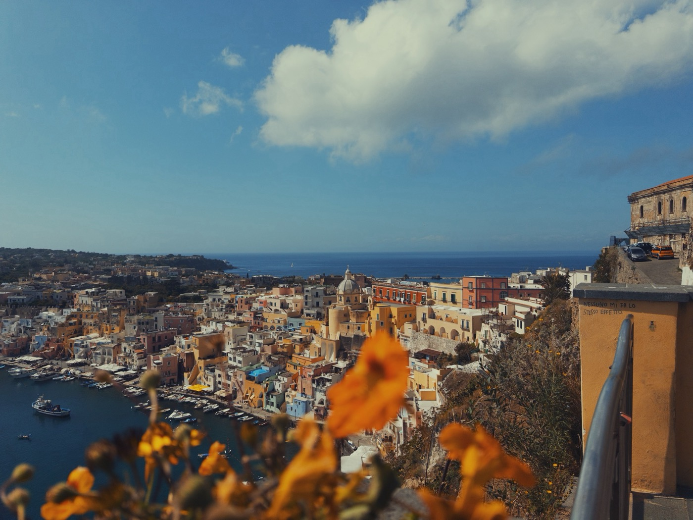

Yeraldin
Some people see dirt. I see what it is waiting to become.
Vision is seeing the house while you are still standing in the field.
I draw the lines first. Roads, lots, water. A dream needs a map.
From land, to a plan, to someone’s dream.
Yesterday’s dirt is tomorrow’s dream house.
I read land for a living. I photograph the rest.
I’m Yeraldin Soto, a civil engineer. I lead development and underwriting at Scout Land Group.
An international engineering scholarship took me to Bilbao for a year, to the University of the Basque Country.
Engineering first. Then a culture, a language, and the English classes I also taught.
Around that time, three of us started asking a question that made more than a few people in engineering wonder whether we could actually pull it off.
We wanted to design an aerodrome. Not a diagram of one.
The runway.The aircraft.The pavement.The drainage.The movement around it.
It became my civil engineering thesis.
It was probably one of the most debated projects in our cohort. It was also the one that kept surprising us.
Outside the work I press flowers, learn languages slowly, and take the long way out of the city.
I am learning to invest, and I love it: the market, and the potential I see in Colombia.
And I will always say yes to a first coffee with someone new.
A few of my days
A sneak peek · 7 of 19






Scroll sideways
I have only ever drawn one line.
The rest is in the drawers.
NextThe Work